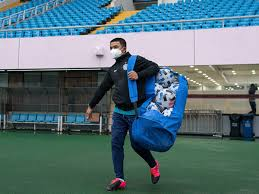

Highlight News
-

By Ayaz Memon
Sports has made a stuttering resumption in the Covid-hit world. From March-end till the first week of June, there was no sporting action anywhere as virtually the entire planet was in lockdown. As fears mounted that 2020 would be a total write-off, some action thankfully commenced, even if limpingly. -
By Raymond Jeferson
World Athletics President Sebastian Coe on Monday claimed that more people took to running to stay fit during the coronavirus-forced lockdown, something his sport can capitalise on once the world is back to being normal. Coe said athletics can benefit from the new-found habit of more people taking to walking and running and his sport will try to build on it to broaden its base. -
By Bob Costaz
Sports events around the world witnessed cancellations while the sports lovers missed viewing all the action as their favourite sports stars were locked in amid the recent pandemic changed the world around us.Cricket has gradually resumed and the fans cheered as India announced the resumption of the Indian Premier League to be scheduled in the UAE from Sat, 19 Sep, 2020 – Sun, 8 Nov, 2020.